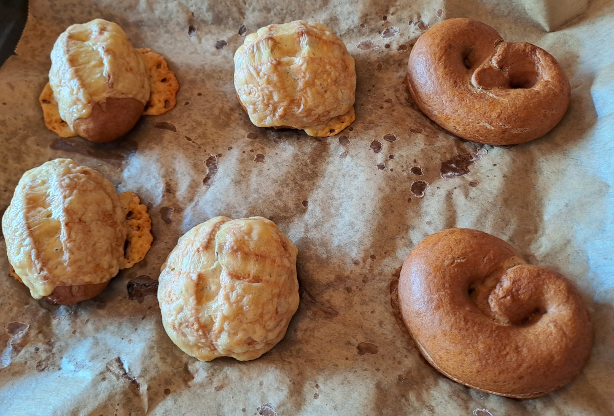

Laugengebäck

Zutaten:
-
Zutaten Vorteig:
- 30g Sauerteig
- 50ml Wasser
- 50g Roggenmehl
-
Zutaten Hauptteig:
- 450g Mehl (Roggen und Dinkel)
- 20g Salz
- Vorteig
- 200ml Wasser
Zubereitung
-
Zubereitung Vorteig:
- Die Zutaten für den Vorteig gründlich verkneten
- Für einige Stunden gehen lassen
-
Zubereitung Hauptteig
- Mehl und Salz vermischen
- Vorteig und Wasser hinzugeben
- gründlich verkneten
- über Nacht im Kühlschrank ruhen lassen
-
Vorbereitung und Backvorgang
- Aus dem Kühlschrank nehmen, nochmals gehen lassen
- Teilen und formen
- 2 Liter Wasser kochen
- Vorsichtig nach und nach 40g Natron hinzugeben
- Die einzelnen Laugenteile für etwa 1-2 Minuten in die Lauge tauchen
- Nach belieben mit Salz, Käse, Sonnenblumenkernen etc. belegen
- Bei 200 Grad für 25-30 Minuten backen